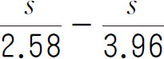
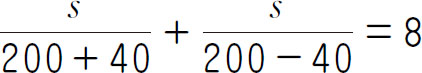
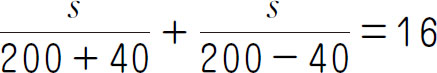

丢番图是古希腊亚历山大里亚的著名数学家，人们只知道他是公元3世纪的人，其年龄和生平史籍上都没有明确的记载．但丢番图的墓碑告诉了人们他终年84岁．丢番图有趣的墓碑是这样的：丢番图长眠于此，倘若你懂得碑文的奥秘，它会告诉你丢番图的寿命．诸神赐予他的生命的 是童年，再过了生命的 ，他长出了胡须，其后丢番图结了婚，不过还不曾有孩子，这样又度过了一生的 ，再过5年，他获得了头生子，然而他的爱子竟然早逝，只活了丢番图寿命的一半，丧子以后，他在数学研究中寻求慰藉，又度过了4年，终于也结束了自己的一生．
【解题技巧】
1．通过画图将题目中的数量关系形象地表示出来．
2．用实物来模拟题目的条件．
3．用假设法来寻求解题思路．
（第九届“走美杯”初赛）地震时，地震中心同时向各个方向传播出纵波和横波，纵波的传播速度是3.96千米/秒，横波的传播速度是2.58千米/秒．在汶川地震中，地震监测点用地震仪接收到地震的纵波后，隔了6.9秒接收到这个地震的横波，那么地震的中心距离监测点约___千米．
【答案】 51．
【解析】 设地震的中心距离监测点s 千米，则由题意，可列出方程

＝6.9，解得s ≈51．【举一反三1】
学校组织三年级、四年级、五年级共315名小朋友参加春游，为了能区分每个年级的学生，要求三年级的小朋友戴白帽子，四年级的小朋友戴红帽子，五年级的小朋友戴黄帽子．白帽子的单价是1.5元，红帽子的单价是2.0元，黄帽子的单价是3.0元.如果买3种颜色的帽子所用的钱是一样的，那么参加春游的三年级小朋友有___人．
（第十届“走美杯”初赛）某游戏中，玉米炮有单筒玉米炮、双筒玉米炮、三筒玉米炮三种．单筒玉米炮每炮发射一根玉米，可以消灭20个僵尸；双筒玉米炮每次发射2根玉米，每根玉米消灭17个僵尸，三筒玉米炮每次发射三根玉米，每根玉米消灭16个僵尸．玉米炮一共开炮10次，发射玉米23根，消灭___个僵尸．
【答案】 382．
【解析】 观察发现，题目中的20、34、48成等差数列，公差为14，则无论哪种玉米炮，发射一次，可消灭的僵尸个数为：发射的玉米数×14＋6．因此所有玉米炮消灭的僵尸个数＝发射的总玉米数×14＋发射次数×6，所以一共消灭了23×14＋10×6＝382（个）僵尸．
【举一反三2】
（第十一届“走美杯”初赛）魔地上有一块魔石，不断向上均匀生长，为避免它把天捅破，仙界长老决定派出植物战士吸食魔石，抑制它的生长，每名植物战士每天吸食的量相同，如果派出14名植物战士，16天后魔石就会把天捅破；如果派出15名植物战士，24天后魔石就会把天捅破，因此至少派出___名植物战士，才能保证天不会被捅破．
（第十一届“走美杯”初赛）军区食堂晚饭需用1000斤大米和200斤小米，军需员到米店后发现米店正在促销，“大米1元1斤，每购10斤送1斤小米（不足10斤部分不送）；小米2元一斤，每购5斤送2斤大米（不足5斤部分不送）”军需员至少要付___元钱才能买够晚饭需用的米．
【答案】 1168．
【解析】 如果把“10斤大米”和“5斤小米”看作一份促销品的话，那么10元钱能买到的折扣都是2元的促销品，因此不存在多买大米和多买小米哪个更省钱的问题．估算大致重量，当大米买了950斤，小米买了105斤时，一共有992斤大米和200斤小米，再买8斤大米即可，此时共花了950＋8＋2×105＝1168（元）．
【举一反三3】
学校组织100名同学去春游，路过一家便利店时，带队老师打算给每个人买一瓶水（包括他自己）．这家便利店规定：每瓶矿泉水3元，用5个空矿泉水瓶可以换1瓶矿泉水．问：现在最少要付多少钱？
（第十届“华杯赛”决赛）A码头在B码头的上游，“2005号”遥控舰模从A码头出发，在两个码头之间往返航行．已知舰模在静水中的速度是200米/分钟，水流的速度是40米/分钟．出发20分钟后，舰模位于A码头下游960米处，并向B码头行驶．求A码头和B码头之间的距离．
【答案】 1536米．
【解析】 舰模从A码头到下游960米处所需时间为960÷（200＋40）＝4（分钟），而舰模一共行驶了20分钟，则该舰模至少在两个码头之间航行了一圈．若该舰模已经在这两个码头之间航行了两圈，则往返一次的时间为8分钟．设A、B两码头之间的距离为s ，则

，解得s ＝768＜960．因此该舰模只在两个码头之间航行了1圈，且所用时间为16分钟，可列出方程
，解得s ＝1536．【举一反三4】
甲、乙两件商品成本共600元，已知甲商品按45％的利润定价，乙商品按40％的利润定价；后来甲打8折出售，乙打9折出售，结果共获利润110元．两件商品中，成本较高的那件商品的成本是多少元？
1．某次比赛设一等奖1名、二等奖5名、三等奖25名，一等奖奖金是二等奖奖金的5倍，二等奖奖金的总和是三等奖奖金总和的2倍，如果一等奖奖金是500元，某班同学在这次比赛中获得2个二等奖，3个三等奖，那么这次比赛中该班共获得奖金_____元．
2．某快递公司对从A地发往B地的快件的收费标准是：快件重量如果不超过10千克，每千克收费5元；如果超过10千克，超出部分按每千克8元收费．已知甲、乙两人通过该快递公司投递两个快件（重量都是整数），甲比乙多付费用33元，求甲、乙两个人的快件的重量．
3．五年级（3）班的三位同学小明、李平和王小华三人拿同样多的钱一起到育兴商场去买精装笔记本，买回来后，小明和李平分别比王小华多拿了6本，这样小明和李平都还要再给王小华12元，请问每本笔记本多少元？
4．有一栋居民楼，每家都订2份不同的报纸．该居民楼共订了三种报纸，其中《南通广播电视报》34份，《扬子晚报》30份，《报刊文摘》22份．那么，订《扬子晚报》和《报刊文摘》的共有_____家．
5．数学家维纳是控制论的创始人．在他获得哈佛大学博士学位的授予仪式上，有人看他一脸稚气的样子，好奇地询问他的年龄．维纳的回答很有趣，他说：“我的年龄的立方是一个四位数，年龄的四次方是一个六位数，这两个数刚好把0～9这10个数字全都用上了，不重也不漏．”那么，维纳这一年___岁．
6．阅读短文，回答问题．
圣马丁警官是K国缉毒部门的负责人，从一年前上任到现在，已经有数十名毒贩被他抓捕归案，在K国边境地带公开的贩毒活动完全消失．
许多毒贩只好潜逃到和K国接壤的国境内，他们把基地搬到了警备松懈的L国边境，然后每天派小股人马外出兜售，最后到国境内成交．
他们知道圣马丁的缉毒分队只能对自己国境内的犯罪活动进行打击，不能越界抓捕罪犯，便和圣马丁玩起了“猫和老鼠”的游戏．每当圣马丁出动警员准备抓捕的时候，他们就立刻逃到L国，缉毒队员只能干瞪眼．
于是，圣马丁经过长时间的秘密策划，制订了一个代号叫做“袋鼠”的秘密行动计划．他们决定趁着夜色，快速到毒贩在L国的藏身地点，一举把所有毒贩都缉拿归案，然后把所有的毒品都带回销毁．当然，这样的行动必须速度很快，否则惊动了L国的话，将引起外交上的麻烦．
这天夜晚，圣马丁和缉毒队员们悄悄潜入L国境内，缉毒队员在不到一分钟的时间里，无一漏网地就把毒贩轻易抓获．在这个时候，查缴毒品却遇上了麻烦．毒贩们把毒品混进木头里，在整整7根大木头中，只有一根是挖空藏有毒品的，可是到底是哪一根呢？
要是没找到毒品的话，是无法给毒贩定罪的，毒贩非常清楚这一点，他们死活不肯说．一名下属提醒圣马丁，装有毒品的木头一定比普通木头轻，其余6根普通木头都是一样重的，可以在现场用一块钢板和一个水泥墩做成简易天平，逐个检验，从7根大木头里挑出藏有毒品的一根．
这是个不错的办法，可这时他们要尽快离开L国，没时间一根一根地测量．在紧要关头，圣马丁稍微思索了一下，便用最简单的方法完成了7根木头的比较，找出了藏有毒品的那根木头，顺利完成了任务．
聪明的读者，你知道最少称几次，可以把装有毒品的木头找出来吗？